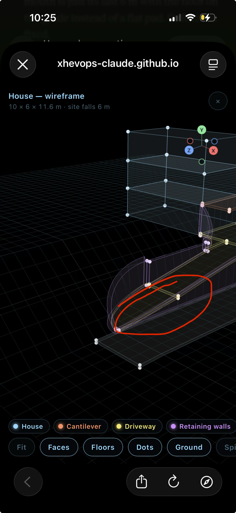
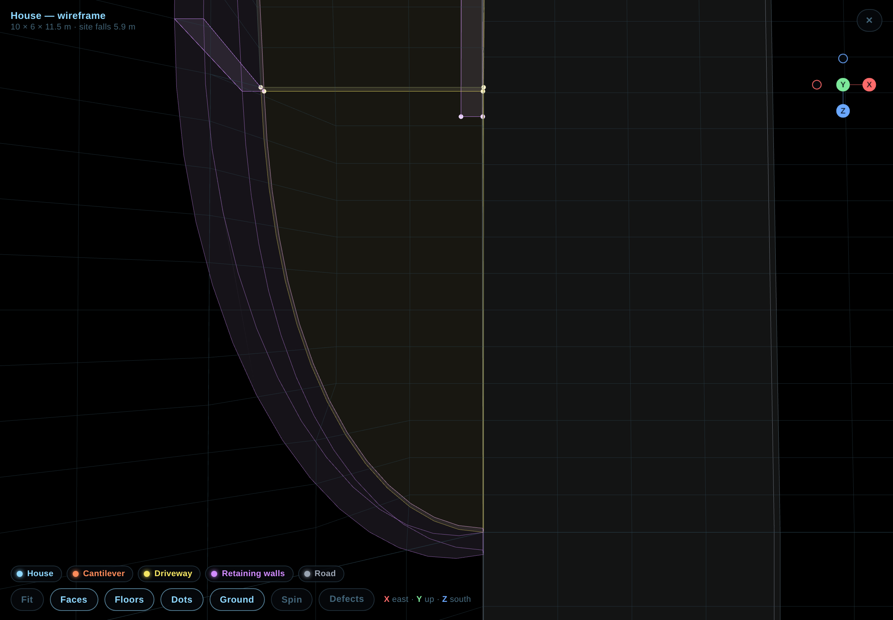

House Wire — defects
The running list, numbered once and never renumbered: "fix 3" always means the same thing. World axes X east, Y up, Z south; metres. The house is x 0–10, z 0–6, the driveway off its east face. Back to the model.
Objects and groups

Rules agreed so far
- R1 — Levels are finished surfaces. A number in a terrain profile is the surface you walk or drive on. A slab's top is that number; its underside is 20 cm below.
- R2 — Walls sit on the cut face, flush. A wall beside a cut stands in the 30 cm the cut is widened by, on the hill side of the line, and every wall along one edge is one continuous line.
- R3 — Nothing overlaps. A wall stops at a slab's underside; a slab stops at a wall's face. Two objects share a face, never a volume.
- R4 — Tangent joins. Where an arc meets a straight, the arc's end is tangent to the straight.
- R5 — One sampling. Anything that follows the ramp — slabs, walls, the ground grid — is sampled at the same stations.
Defects
Was wrong: the straight uphill wall stood inside the cut while the fillet wall and the mouth wall were bands in the hill; at both ends the wall line jogged 30 cm.
Fixed: R2 — the uphill side is one derived wall line: fillet arc, straight run, mouth arc, every piece a 30 cm band on the hill side of the cut line at 3 m from the house face. The straight run is derived from the fillet's end to the mouth's start, so it cannot jog.


Was wrong: the radius was typed by hand and had to be kept equal to the cut's offset to stay tangent.
Fixed: R4 — the radius is the offset from the house face (3 m) unless overridden, so the arc leaves the house face at the corner and meets the ramp's edge tangentially by construction.

Was wrong: the ramp eased down from z 5, but the door strip beside it (x 10–13) stayed flat, so for that metre there was a 7 cm step between the two slabs.
Fixed (D1): the ramp starts at z 6, the house edge; the apron is one flat slab z −2 to 6 and the door strip is gone.

Was wrong: the outer wall was drawn up to the slab's top, so it occupied the slab; at the ramp foot its top ended below its own foot.
Fixed: R3 — the wall's top is the slab's underside and its foot the road; a walked wall now runs out where top meets foot, so the outer wall ends at about z 16.1 where the slab's underside comes down to the road.


Was wrong: "level" meant three things: profile −3, slab top −2.9, a road slab straddling −6.
Fixed: R1 — every profile number is a finished surface: the cut is −2.9 (the garage floor), the road −5.9 rising to −4.9; slabs are 20 cm deep under their surface.

Was wrong: the band's top was read per vertex, so the inner and outer arcs got different heights and the top tilted across its 30 cm.
Fixed: the top is the natural ground at the hill-side face, used for both edges of the band.

Was wrong: the grid was sampled at 1 m and the slabs at 0.5 m, so lines that should coincide did not.
Fixed: R5 — one step of 0.5 m for walked volumes and for the grid over the driveway, stations counted from the ramp's start, so a slab's edge and the grid line under it are the same polyline.

Was wrong: 27 % average and about 36 % through the middle.
Fixed: D2 brought it to 12.5 % — but D3's landing takes 4 m off the run again: 2.17 m over 12 m (z 6 to 18) is 18 % average, about 23 % in the middle. It is a trade-off between the landing's length and the grade — see D4.

Was wrong: the outer wall ran through the mouth to the tip and the floor met the road only over the last metre and a half.
Fixed: D3 — the driveway reaches the road at z 18 and from there is the road's surface: a 4 m landing that follows the road's own fall, with the mouth's flare opening onto it. The outer wall runs out at about z 16.1, so the road side is open for 6 m, the first 2 m with a kerb of at most 24 cm.


Decisions
- D1 — decided: the ramp starts at the house edge (z 6); the apron stays flat and whole.
- D2 — decided: the driveway climbs from the very entrance; no flat pad. The mouth is the ramp's last 6 m and its floor is on the grade.
- D3 — decided: a road-level landing. The ramp reaches the road at z 18; from there to the property's end the driveway is the road's own surface, and the outer wall runs out where the slab meets the road.
- D4 — waiting: the grade is back to 18 % (23 % mid) because the landing takes 4 m off the run. Options: a shorter landing (3 m gives 16 %), a flatter ease, starting the grade inside the apron again, or accept it.
- Site fact: the road is not level — it rises 1 m along the property, so the entrance (south end, z 22) is 2 m below the garage floor, not 3. Assumed: the north end of the property (z −2) is the 3 m-below end.